Цвет ролика: 4 варианта
На каждом варианте одни и те же 4 кадра из ролика.
Сейчас, как есть
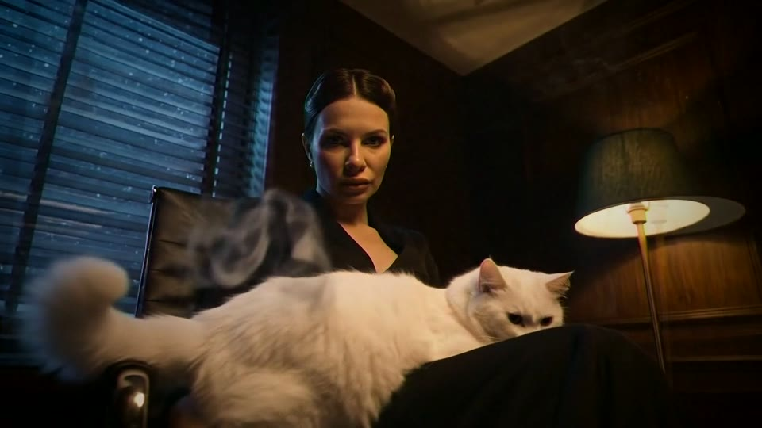
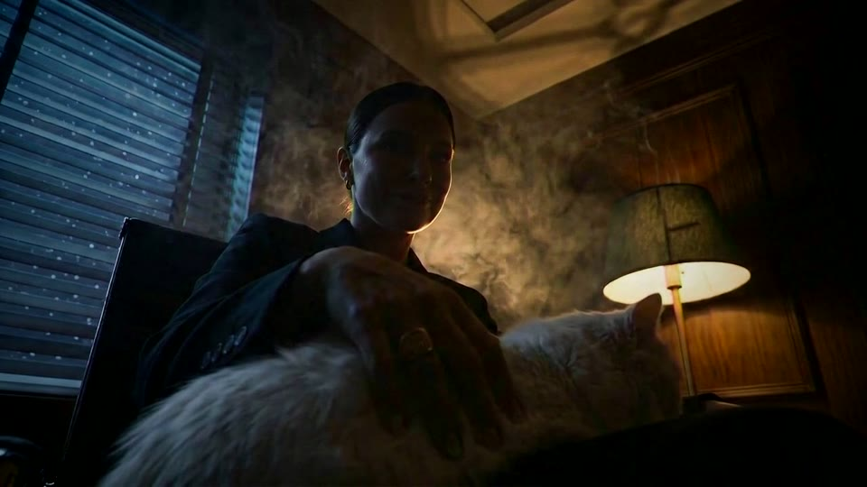
1. «Крёстный отец»: тёплый янтарь, глубокие тени. Я за него
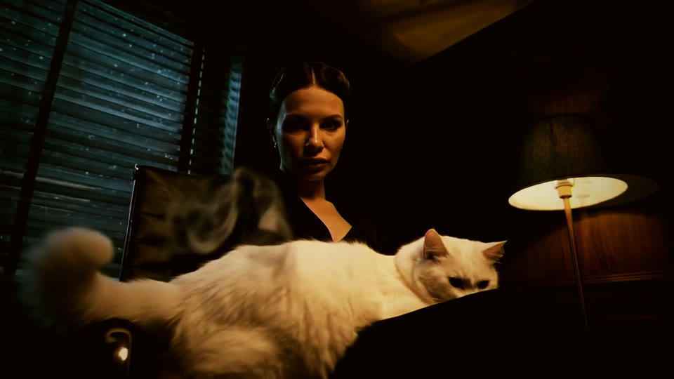
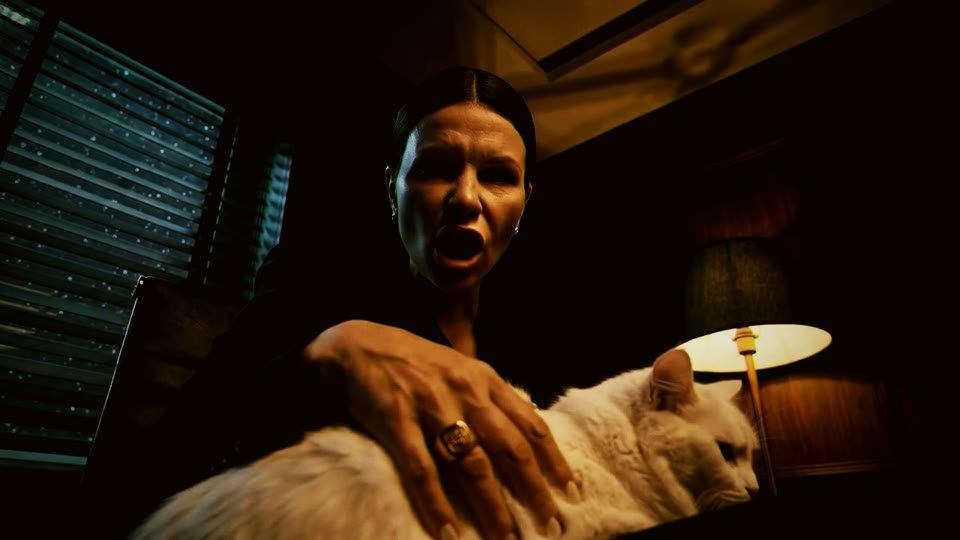
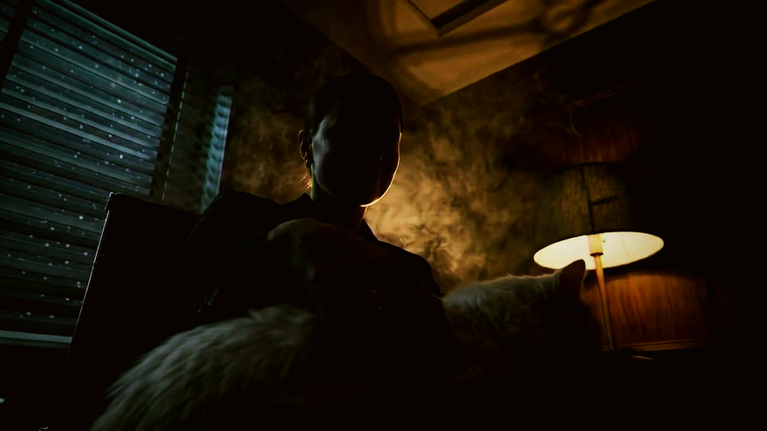
2. Выцветшая плёнка 70-х
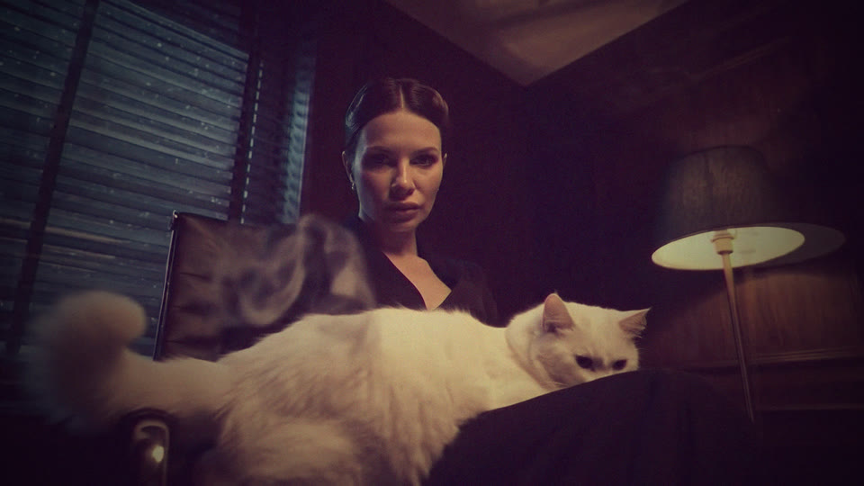
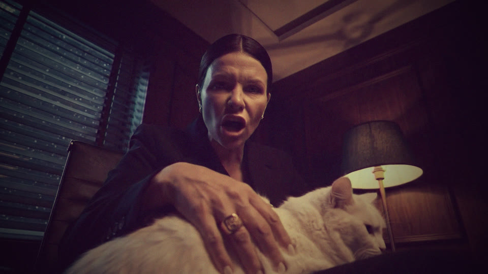
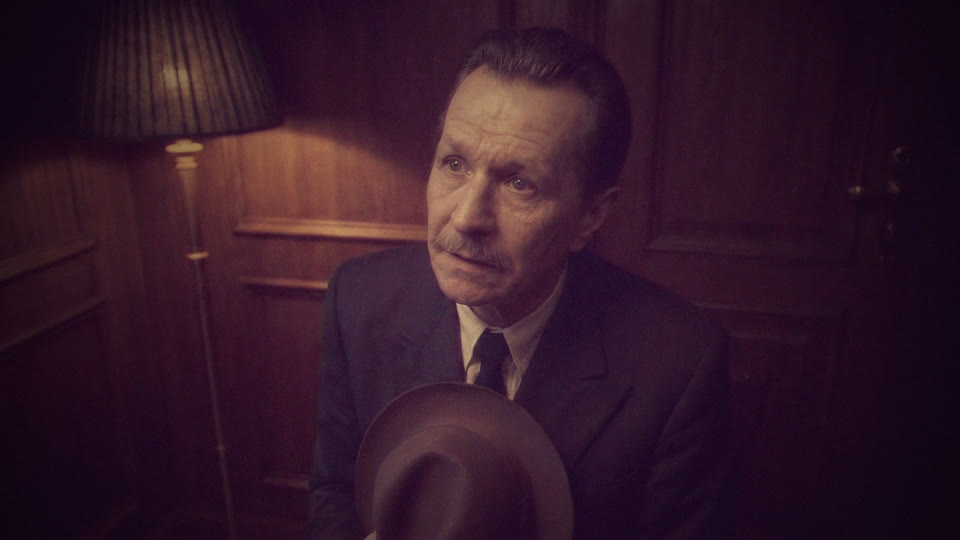
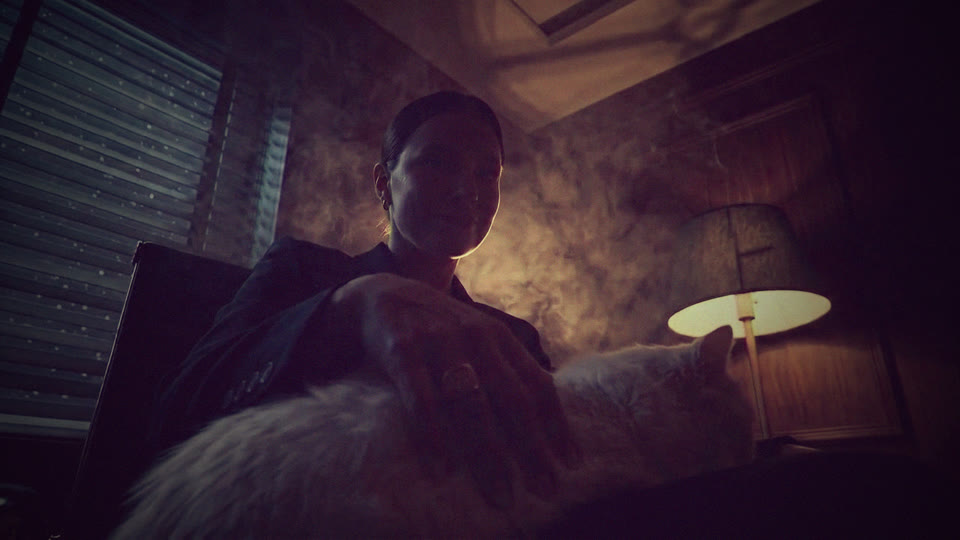
3. Сепия, старая фотография
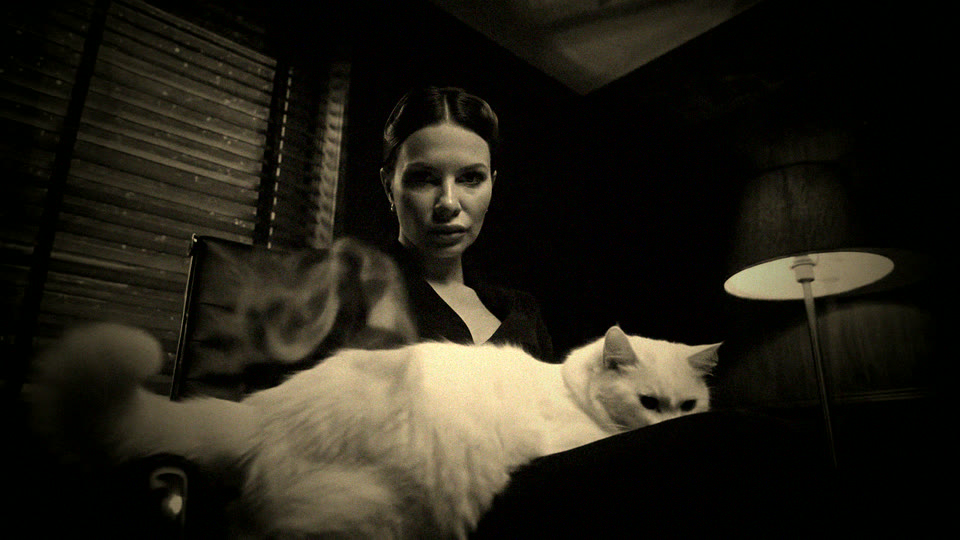
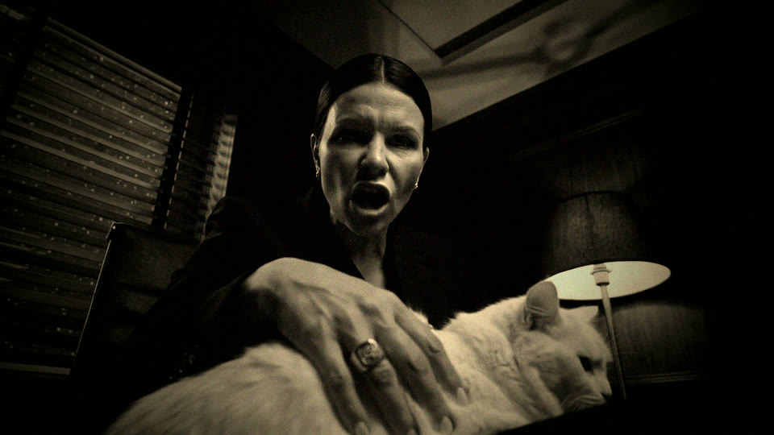
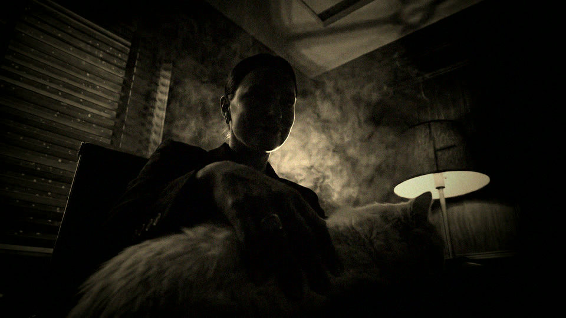
4. Чёрно-белый нуар
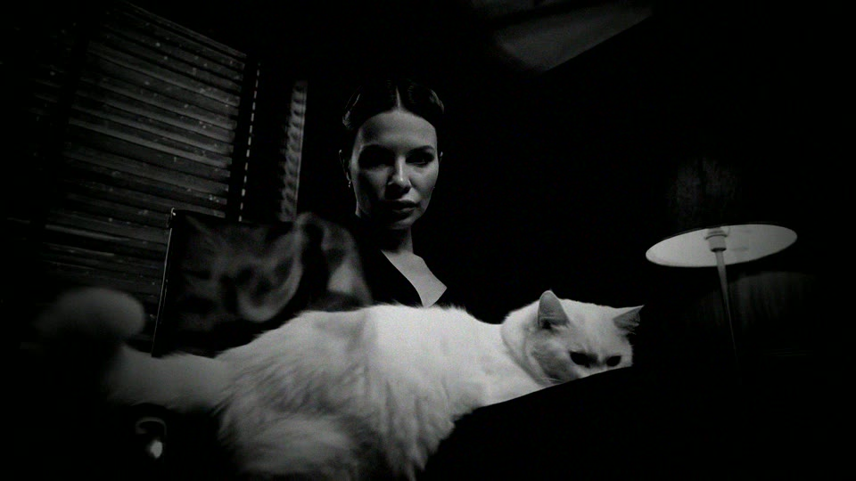
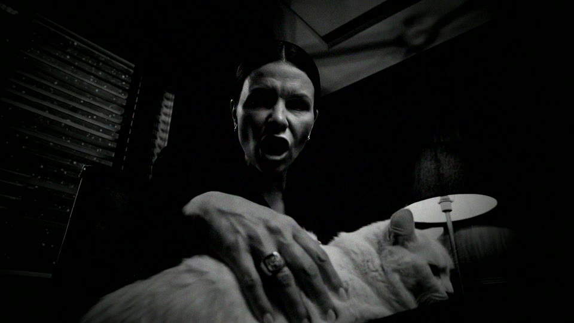